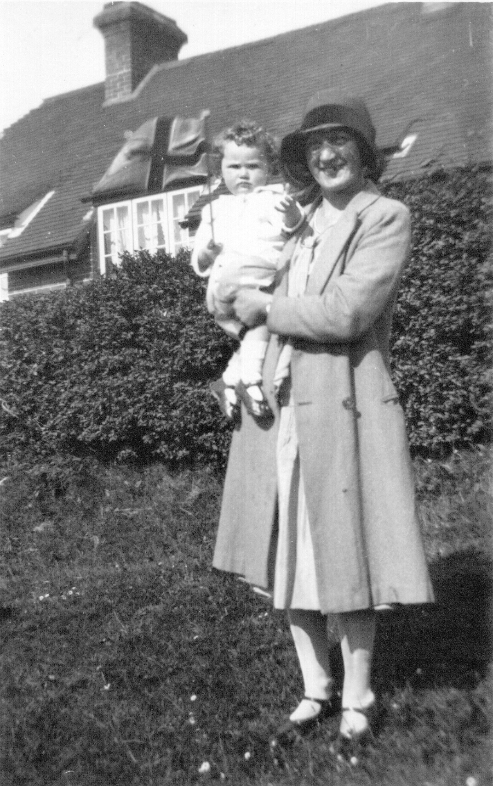
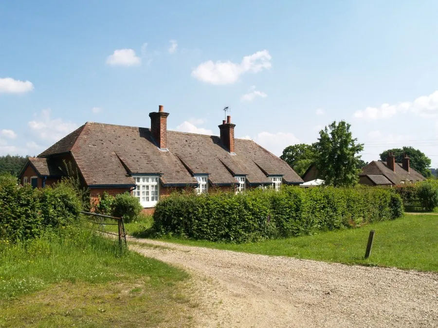
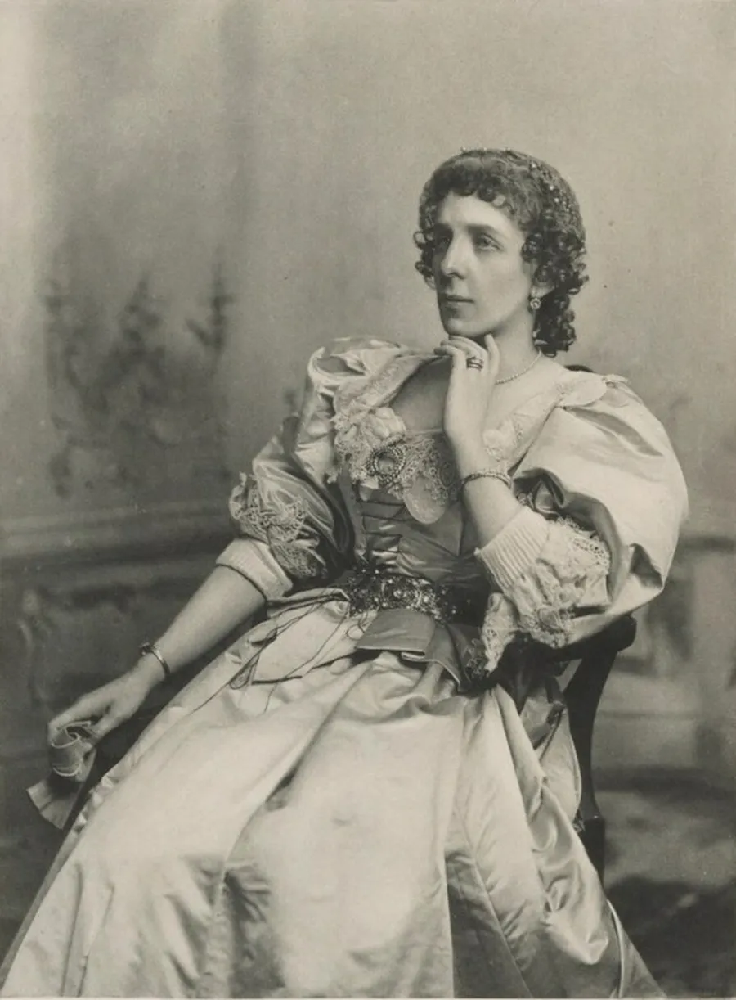
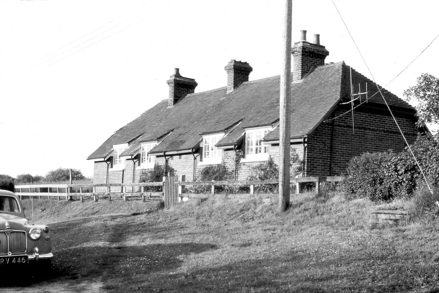
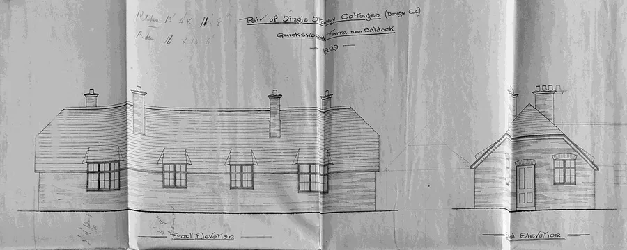
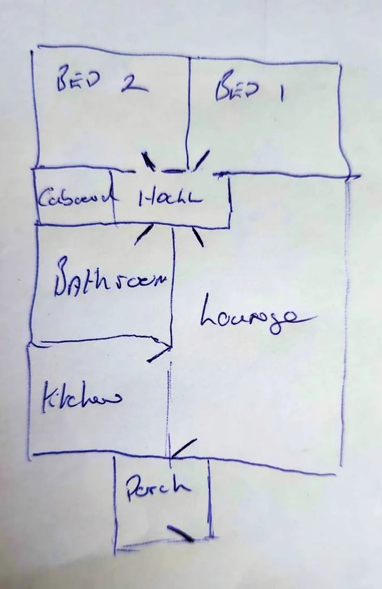
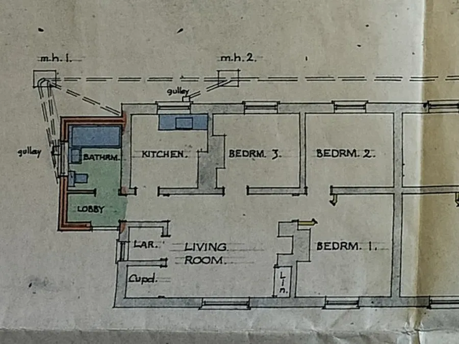
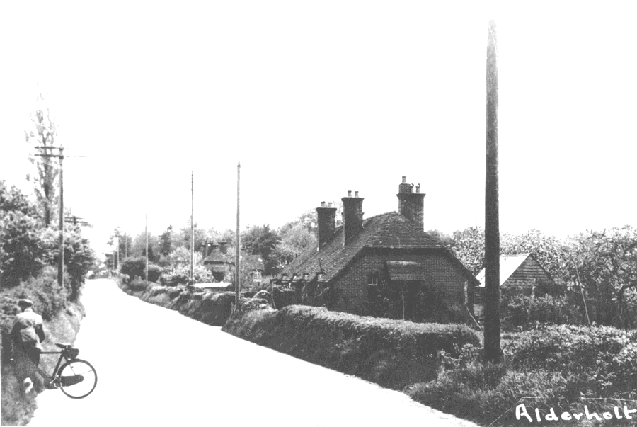
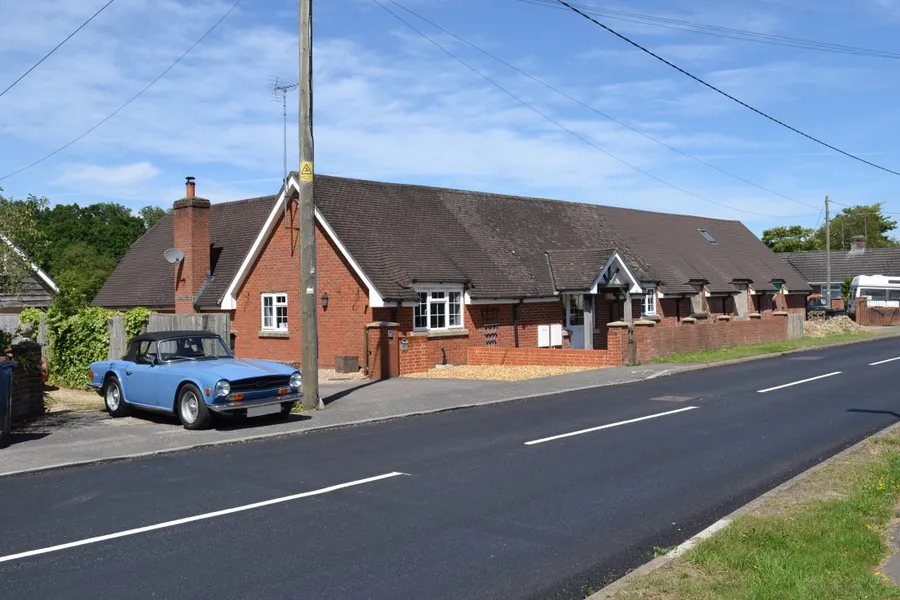

Lady Gwendolen Bungalows
by Adrian King

This is the name given to the estate cottages recognisable by their characteristic Wall Dormers that are found in the parish. Lady Gwendolen Georgiana Gascoyne-Cecil (1860–1945) was a daughter of Robert Gascoyne-Cecil 3rd Marquess of Salisbury.
Gavin Fauvel who is Rural Estates Director of Gascoyne Estates says that the Salisbury family and staff have always known the cottages by this name.
My grandparents after their marriage in 1928 moved into a new bungalow on Batterley Drove that had been built for the young people of Cripplestyle by the Marquess of Salisbury.


There are similar bungalows near the Old Chapel Memorial Garden and elsewhere in Cripplestyle and the parish.
Robin Harcourt Williams an Archivist at Hatfield House says
“Lady Gwendolen Cecil was responsible for the design not just the bungalows (on Batterley Drove) but also of numerous other similar bungalows. They were built on Lord Salisbury’s estates during the decade before the First World War.
Motivated by their Christian faith and as conscientious landlords both the Third and Fourth Marquesses of Salisbury took a special interest in the provision of healthy but economical 'affordable housing' on their estates
This interest was actively shared by the daughters of the Third Marquess Lady Gwendolen and Countess Selborne. Lady Gwendolen was assisted by William Marshall who was Lord Salisbury’s Clerk of Works between 1897 and 1931 and a qualified architect in the preparation of cottage plans."

Two sisters one an author and the other a political activist working together to make life easier for their father’s tenants.
In 1878 the Prime Minister Benjamin Disraeli stayed at Gwendolen’s family home and he wrote to Queen Victoria later that he had “rarely met more intelligent and agreeable women” referring to Gwendolen and her sister.
The single and semi-detached bungalows were basic with outside toilets but large garden plots. Accommodation was typically three bedrooms with living and kitchen areas. The estate in time gradually modernised the bungalows.

It is known that the bungalow between Upper and Lower Bull Hill Farms had bathrooms added as an extension after 1965. Other examples of modernisation involved putting the bathroom where the third bedroom had been.

Some of the bungalows are still owned by the Cranborne Estate but others have become freehold. Many have had further extensions such that the layout has changed substantially. One such extension is a building on Station Road, Alderholt between Camel Green Road and Presseys Corner.
Donna who lives in one of the bungalows in the parish says
“I love where I live. Moved here in 1997 and would love the opportunity to be here forever. The bungalow is quite small for us as a family but it means we keep less clutter. The garden more than makes up for the lack of bungalow space and we love the outside so it’s perfect. We have a lovely little community around us and help each other which I love.”

Additional Images



Some Bungalow Locations
| Batterley Drove 1 | SU0894912339 |
| Batterley Drove 2 | SU0894012297 |
| Cripplestyle 1 * | SU0905712183 |
| Cripplestyle 2 | SU0908012152 |
| Crendell Road, The Moor | SU0915112697 |
| Crendell Common 1 * | SU0870213184 |
| Crendell Common 2 * | SU0854213263 |
| Crendell, Pye Lane * | SU0819513463 |
| Bull Hill | SU1066113885 |
| Alderholt, Fordingbridge Rd | SU1247213265 |
| Rose Cottage, Fordingbridge Rd | SU1256413262 |
| Alderholt, Station Rd 1 * | SU1209412852 |
| Alderholt, Station Rd 2 * | SU1215712922 |
| * Substantial Extension | |
The OS National Grid references (SU etc) can be viewed using Grid Reference Finder or the Ordinance Survey website.